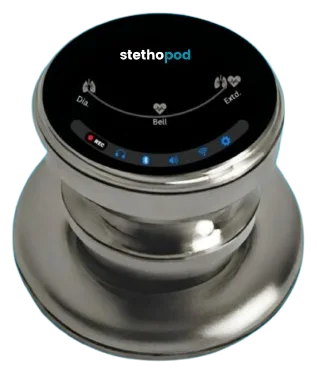

Case study · Digital stethoscope application
Stethopod
A digital stethoscope app that streams audio over BLE in real time, records it, and stores it securely against patient profiles.
The device hardware and firmware are built by SlimIOT’s device teams. My work is the software: the mobile app, audio streaming and playback, patient records and cloud storage.

01Overview
Stethopod is a connected stethoscope. The app streams its audio live over BLE, records and replays examinations, and keeps every recording organised by patient in secure cloud storage.
02Problem
Audio is one of the hardest things to send over BLE. It’s continuous, latency is noticeable, and a dropped connection in the middle of an examination interrupts the clinician. The recordings are also medical data, so they have to be organised per patient and stored securely.
03My role
- Enabled real-time audio streaming over BLE from the stethoscope to the app
- Built recording and playback management
- Built patient profiles and history tracking
- Implemented secure cloud storage for medical audio data
- Built reliable, low-latency BLE reconnection handling on the app side
04Architecture
Stethopod
Connected digital stethoscope
Stethopod app
Live listening, recording, playback
Patient profiles
Recordings and history per patient
Secure storage
Medical audio stored securely
High-level data flow. Simplified for clarity.
05Key features
Live audio
Real-time streaming from the stethoscope over BLE.
Record & replay
Capture examinations and play them back.
Patient history
Profiles with every recording attached.
Fast reconnection
Low-latency recovery when the BLE link drops.
06Challenges
- Keeping audio latency low enough for live listening
- Recovering from BLE drops quickly so an examination isn’t interrupted
- Handling medical audio securely from capture through cloud storage
07Technology
08Outcome
A clinical audio tool where the hard part, a stable low-latency BLE audio link, is handled by the app, so the clinician only has to listen.